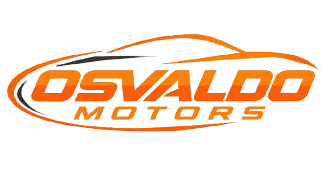
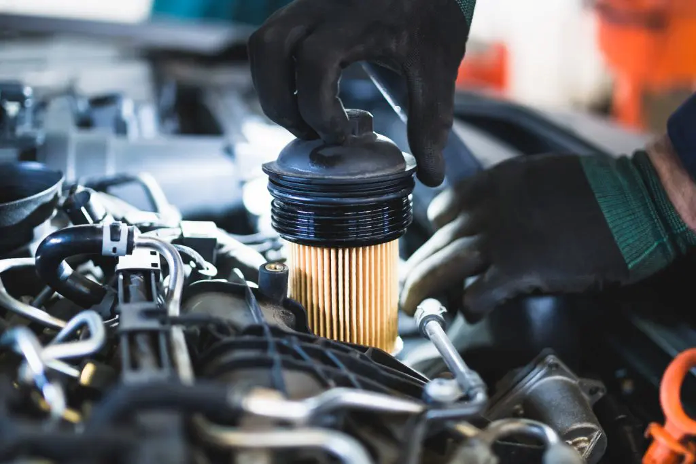
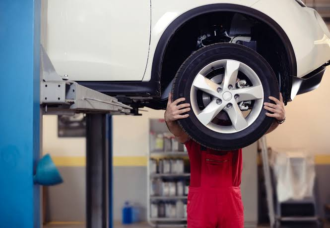
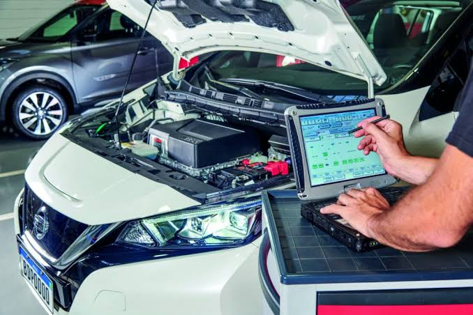
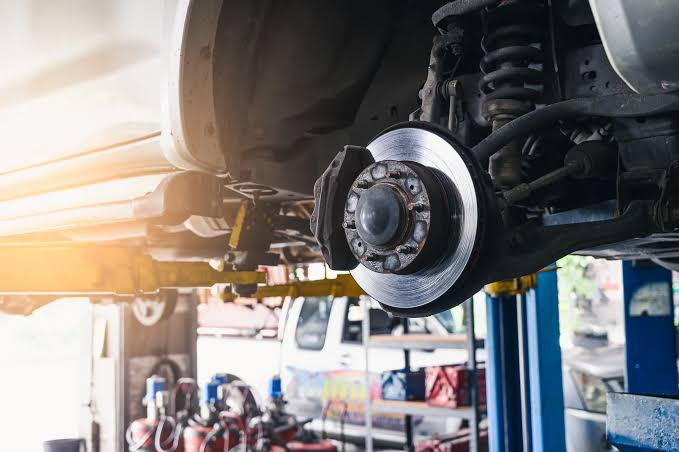
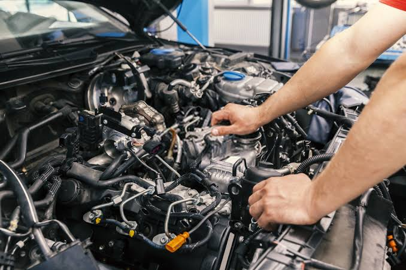
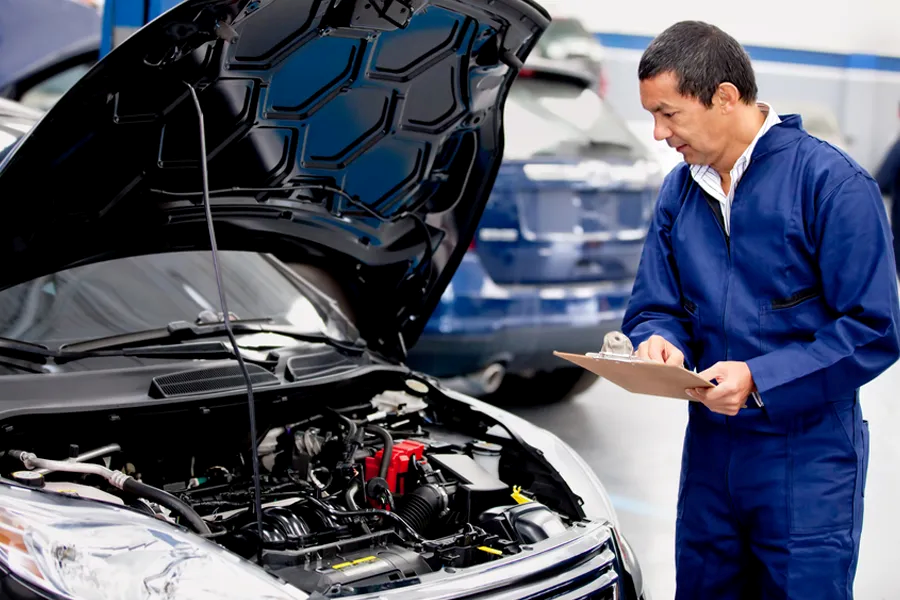

Um pouco sobre:
Este site tem como objetivo realizar o agendamento em uma oficina mecâmica.
Este site tem como objetivo realizar o agendamento em uma oficina mecâmica.

Conheça um pouco de nossos serviços

A troca de óleo e filtros é essencial para manter o motor bem lubrificado e protegido contra desgastes. Realizamos a substituição do óleo e dos filtros de acordo com as especificações do veículo, ajudando a preservar o desempenho e a vida útil do motor.

O alinhamento e o balanceamento garantem que as rodas estejam trabalhando corretamente. O serviço ajuda a melhorar a estabilidade e o conforto durante a condução, além de contribuir para um desgaste mais uniforme dos pneus.

Identificamos problemas no sistema elétrico e eletrônico do veículo utilizando equipamentos de diagnóstico. Verificamos componentes como bateria, alternador, iluminação, sensores e outros sistemas, buscando localizar a causa da falha e realizar o reparo adequado.

A manutenção preventiva consiste em uma avaliação dos principais componentes do veículo antes que problemas mais sérios apareçam. São verificados itens importantes para o funcionamento e a segurança do carro, ajudando a evitar imprevistos e gastos maiores com reparos.

Realizamos inspeção e manutenção dos sistemas de freios e suspensão, verificando componentes como pastilhas, discos, amortecedores e outros itens relacionados. O objetivo é garantir segurança, estabilidade e um funcionamento adequado do veículo.

Realizamos uma avaliação completa do motor para identificar possíveis falhas, ruídos, perda de desempenho ou outros problemas. Após o diagnóstico, são realizados os reparos necessários para recuperar o funcionamento adequado e garantir maior confiabilidade ao veículo.
Confira abaixo os valores dos serviços oferecidos por Osvaldo Motors
| Código | Serviços | Tipo de Cobrança | Preço (R$) |
|---|---|---|---|
| SERV-01 | Alinhamento e Balanceamento | Mensal | R$ 120,00 |
| SERV-02 | Troca de óleo e filtros | Mensal | R$ 150,00 |
| SERV-03 | Diagnóstico e manutenção elétrica | Mensal | R$ 100,00 |
| SERV-04 | Manutenção de freios e suspensão | Mensal | R$ 600,00 |
| SERV-05 | Diagnóstico e reparo de motor | Mensal | R$ 459,00 |
| SERV-06 | Revisão e manutenção preventiva | Mensal | R$ 250,00 |